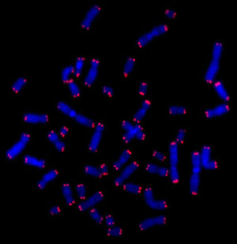

"The Fountain of Youth" oil on lime by Lucas Cranach the Elder (1472-1553)
As early as 5th century BC, tales of a fountain of youth have fascinated and inspired people all over the world. The idea of a spring that restores youth to anyone who drinks from it or bathes in it, has led explorers to risk and even lose their lives in search of it. But what if you didn’t have to read ancient texts or travel to foreign lands to find this fountain? What if it’s already inside of you?
The key to our youth lies in the health of our cells. The reason we don’t live forever is because the cells that make up our tissues and organs have a limited number of divisions, before they senesce (stop dividing) or die off. The function of many of our tissues and organs declines over time because their cells senesce and are thus not replenished. One simple example is our hair, which thins and falls out as the cells in our hair follicles stop dividing. In vital organs this limit to cell division results in disease, organ failure, and death.
Although we are still far from figuring out all of the factors that keep our cells dividing properly, scientists believe that telomeres, special DNA structures, have a lot to do with it. A recent study of 65,000 people found that the length of a person’s telomeres is the biggest predictor of lifespan (excluding people with cancer). That is, how much these people smoked, exercised, or drank, their cholesterol levels and BMI, their lifestyles and age – none of these factors were as important for predicting a long lifespan as having long telomeres!
What are telomeres? How are they related to aging? This article will introduce you to this elegant structure, examine its relationship to the health of our cells, and discuss how this relationship affects the quality of our lives.
Our DNA is like the instruction manual that makes us who we are. Every time a cell divides, DNA has to be faithfully copied and passed on to the daughter cells, so that none of these valuable instructions are lost. This process is called DNA replication.
DNA replication can be compared to building a railroad, where DNA strands are like a series of tracks, and the replication tools are like railroad workers. The replication tools bind to and use the original DNA as a template to build the new DNA, much like how railroad workers assemble a railroad track by track. However, these replication tools have a problem - they are unable to copy the ends of the DNA they’re binding to. You can think of this problem as railroad workers being able to lay rails everywhere except on the spot where their feet were standing.
Thus, every time DNA replicates, you lose some DNA at the ends. If you didn’t have a way to prevent DNA from being lost, it’d be like copying an instruction manual over and over again and losing a page each time. With the loss of each page the manual starts to make less and less sense until it eventually becomes unusable.
Enter telomeres, long DNA sequences at the ends of chromosomes that protect our valuable genetic code. Dr. Elizabeth Blackburn, who won the Nobel prize for discovering telomeres, once compared them to the plastic caps on shoelaces that prevent them from fraying, except in this case, the shoelaces are DNA. Without the protective ends, a shoelace quickly frays and becomes unusable!
 DNA can be colorfully labeled and seen under a microscope. Here the telomeres are in red and the rest of your DNA is in blue. Telomeres look a little bit like shoelace ends. (Photo credit: Reinhard Stindl)
Telomeres are made up of a sequence of six to eight DNA bases that are repeated over and over. Human telomeres range from 5,000 to 15,000 bases. Unlike other DNA sequences, however, telomeres don’t provide any information for running a cell. They’re simply there to provide a buffer at the ends of chromosomes for the replication tools to bind, so that the rest of the DNA can be copied, and important information is not lost during replication.
However, because of the DNA replication problem described above, 30 to 200 telomere bases are lost with each cell division. This means that cells can divide a limited number of times before they run out of telomeres. Cells have thus evolved to senesce or to self-destruct when their telomeres shorten to a certain, critical length. At a certain point all our cells senesce, but the longer the telomeres you’re born with, the more divisions your cells can theoretically have.
It’s no surprise then, that telomere length has been linked to human lifespan. After all, organs decline in function as cells die or senesce, and cells die or senesce in response to losing their telomeres. Wouldn’t it then be great if we had a way to keep telomeres long forever?
It turns out that cells have a natural way to overcome the loss of telomeres: a special protein called telomerase that adds sequences to telomeres after each cell division. Telomerase can delay or completely prevent telomere loss, but it is active in only a few cell types, such as egg and sperm cells and cells in the developing embryo. It is also made in a few adult cell types that need to divide rapidly (blood, skin, and neural stem cells for example), although these tend to lose their ability to make telomerase over time. Mutations in telomerase result in dyskeratosis congenita, a disease that affects quickly dividing cells in the body such as skin and bone marrow, and whose victims have an average lifespan of 30 years. Scientists at Stanford have introduced these mutations in animal models to better understand aging, and recreated the symptoms of this disease.
It’s not entirely known why we don’t make telomerase in all of our cells despite the fact that it’s seemingly good for us. One idea is that maybe long-lived cells might be more prone to gathering DNA damage and errors in replication. These alterations, or mutations, could lead to cancer. Scientists are currently working to harness the power of telomerase while accounting for the risk of cancer.
For now, the most effective approach has been to introduce another copy of the telomerase gene to make more active telomerase. Mice receiving this treatment not only have longer telomeres and lifespan, but they also exhibit the metabolism and motor skills of younger mice. This bodes well for us, as we not only want to live longer, but we also want to remain healthy in our old age. Scientists have also tested this approach on human skin cells, making them divide up to 40 times more than untreated cells. The first clinical trial for telomerase therapy began last year, making this an exciting time for aging research. However, it’s important to remember that telomeres aren’t the final solution to the aging problem.
Just as there are many accounts of a “fountain of youth” in folklore, there are many hallmarks of aging. Finding a “cure” for aging is therefore less like searching for THE mystical fountain of youth, and more like the Stanford tradition of fountain hopping - going from fountain to fountain, each with its own special qualities.
Even if we could make a ton of telomerase to keep our cells dividing forever, they’d run into new problems. For example, they might collect more and more mutations in their DNA just by chance, which may trigger them to die anyway so that they don’t lose valuable information. Mistakes in protein folding might build up, potentially causing proteins to lose their function or form toxic clumps. Another possibility is that or our cells might not be able to produce the energy needed to fuel themselves. Scientists have identified nine hallmarks of aging that we’d have to consider if we want to live longer and healthier lives.
But this doesn’t necessarily mean that the fountain of youth is unattainable; it will simply be composed of many small components including telomerase. Understanding each small component individually has a large impact on improving overall health. It’s our hope that the cure for age-related diseases lies in figuring out how to manipulate all these small components for big results.